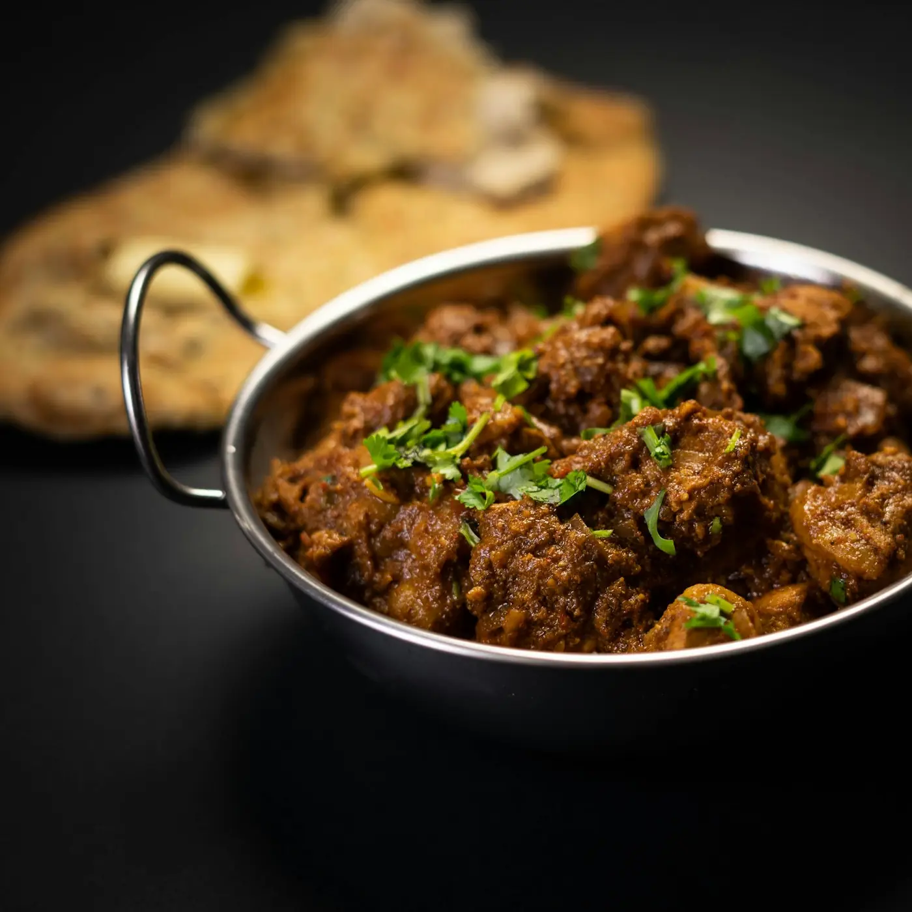

Pepper Mutton Fry
मिरी मटण
- Time 1 hr 15 min
- Serves 4
- Made with Satva Black Pepper
Mutton cooked tender, then fried dry with onions and curry leaves. A heap of freshly crushed black pepper goes in at the very end, so it stays sharp.
Ingredients
- 500 gmutton, on the bone
- ½ tspTurmeric
- 1 tspsalt
- 3 tbspoil
- 1 tspCumin Seeds
- 2 sprigscurry leaves
- 2onions, thinly sliced
- 1 tbspginger-garlic paste
- 1 tspCoriander Powder
- ½ tspChilli Powder
- ½ tspGaram Masala
- 2 tspBlack Pepper, freshly crushed
- 2 tbspcoriander leaves, chopped
Method
- Pressure-cook the mutton with the turmeric, salt and 1 cup of water for 5-6 whistles, until tender. Keep the stock.
- Heat the oil, add the cumin seeds and curry leaves, then the onions. Fry until deep golden, about 10 minutes.
- Add the ginger-garlic paste and fry for 2 minutes, then the coriander powder, chilli powder and garam masala for 30 seconds.
- Add the mutton with its stock. Cook on high, stirring, until the liquid has gone and the masala coats every piece, about 10 minutes.
- Add the black pepper in the last 3 minutes and keep tossing until the meat looks dark and dry.
- Finish with coriander leaves.
 Everyday Varan Bhaat
Everyday Varan Bhaat Sunday Biryani
Sunday Biryani Aitwarcha Rassa
Aitwarcha Rassa